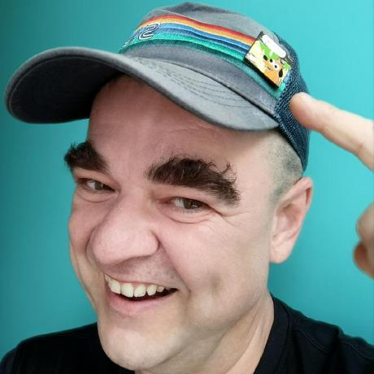

January 24, 2023 — Josef Pospíšil (Pepe) is a programming enthusiast, first with Basic in 1986, then the first Rubyist in the Czech Republic, and now a contributor to the language Janet.
Pepe: For me, as a former Rubyist and current Janet, it is the joy and comfort of the programmer. And not only for the seasoned professional but mainly for those new to the language or programming.
Pepe: I was not at the inception, but I know the story well enough to convey it. Bakpakin (Calvin Rose) created the Fennel language as the test bed for the ideas of the new LISP-like language on top of Lua. It was brilliant as it enabled a fast feedback cycle on top of the proven language and its virtual machine. As proof, it is still alive in excellent hands and evolving in its regard. When this prototype cleared the picture enough, Janet was started as a fresh take on the language design, wholly written in the C with custom code for every aspect of it. From parsing thru the bytecode and virtual machine to the mutable and immutable data types. This meant that the first couple of cycles of life, it was mostly making sure it did not segfault. Yet the approach brought sweet fruits:
Pepe: This is very similar to the mystery of the evolution of the human race. This is one of the reasons I am so into programming language design. Mechanisms are mixed and hidden even for the creators at the inception. The future of the programming language landscape will stay the same: evolving all the time.

Image source. Thank you for your time Pepe and best of luck on the upcoming release!